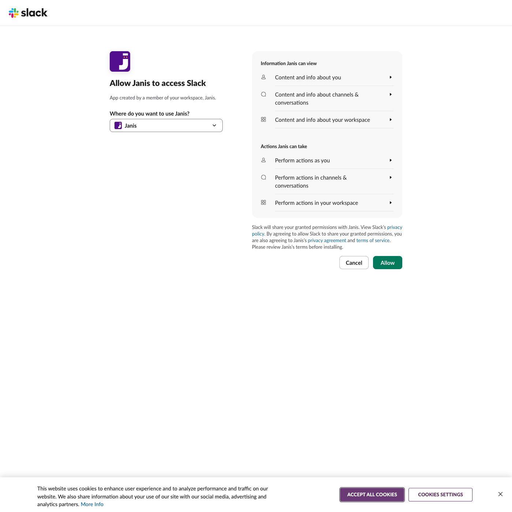
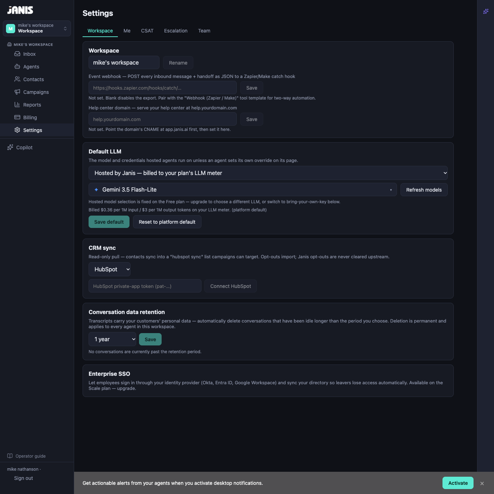
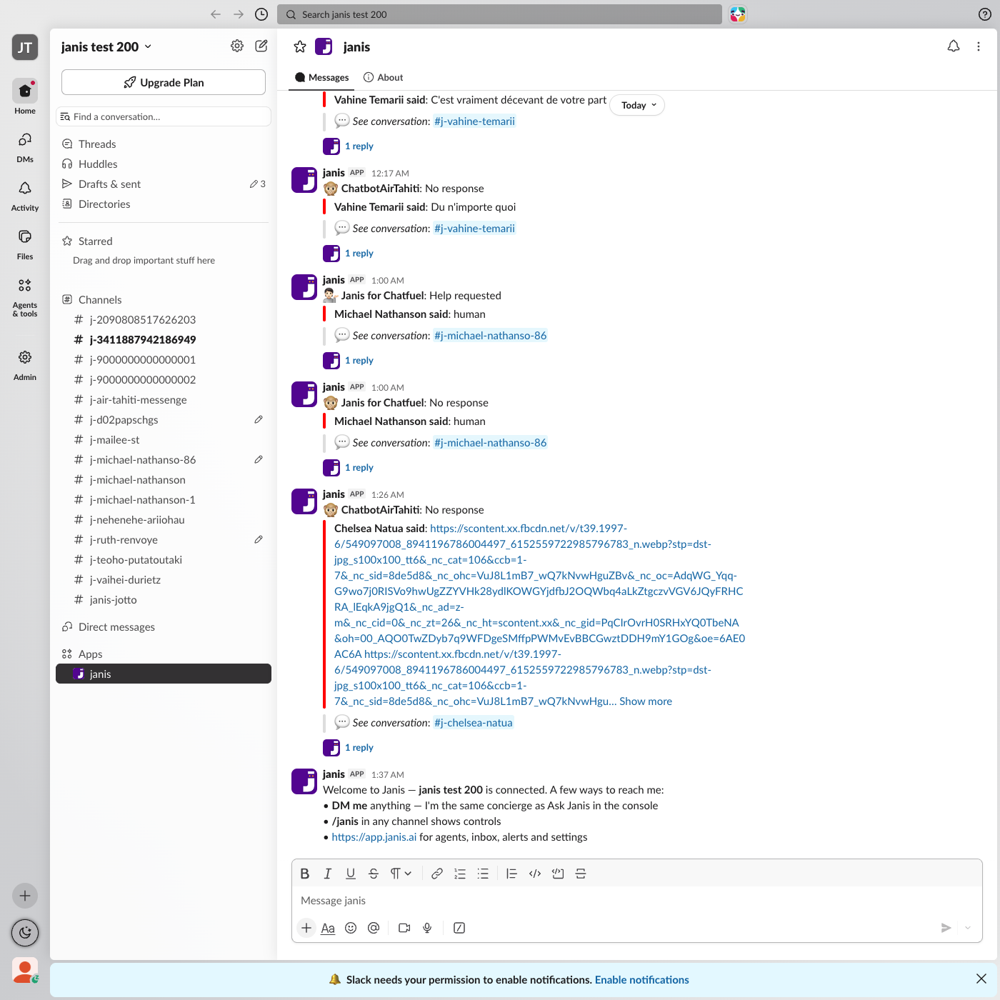
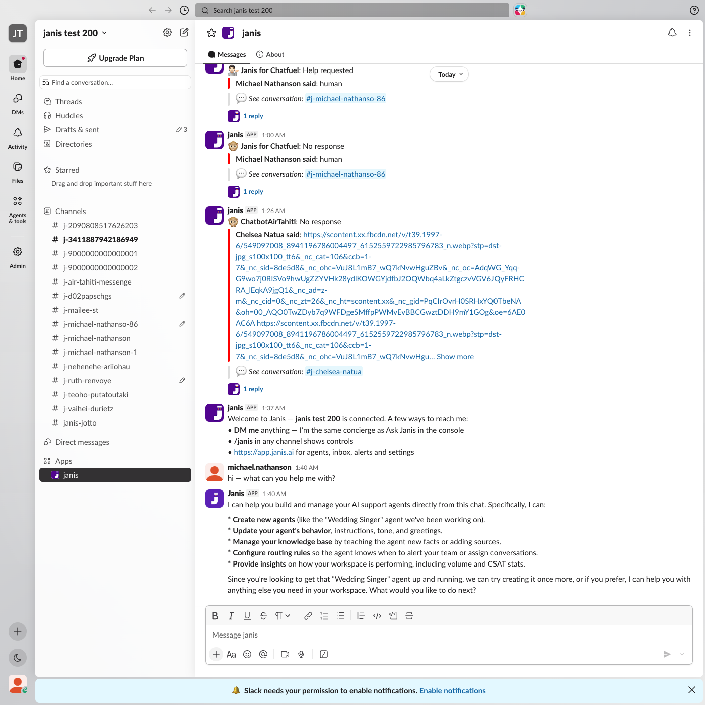
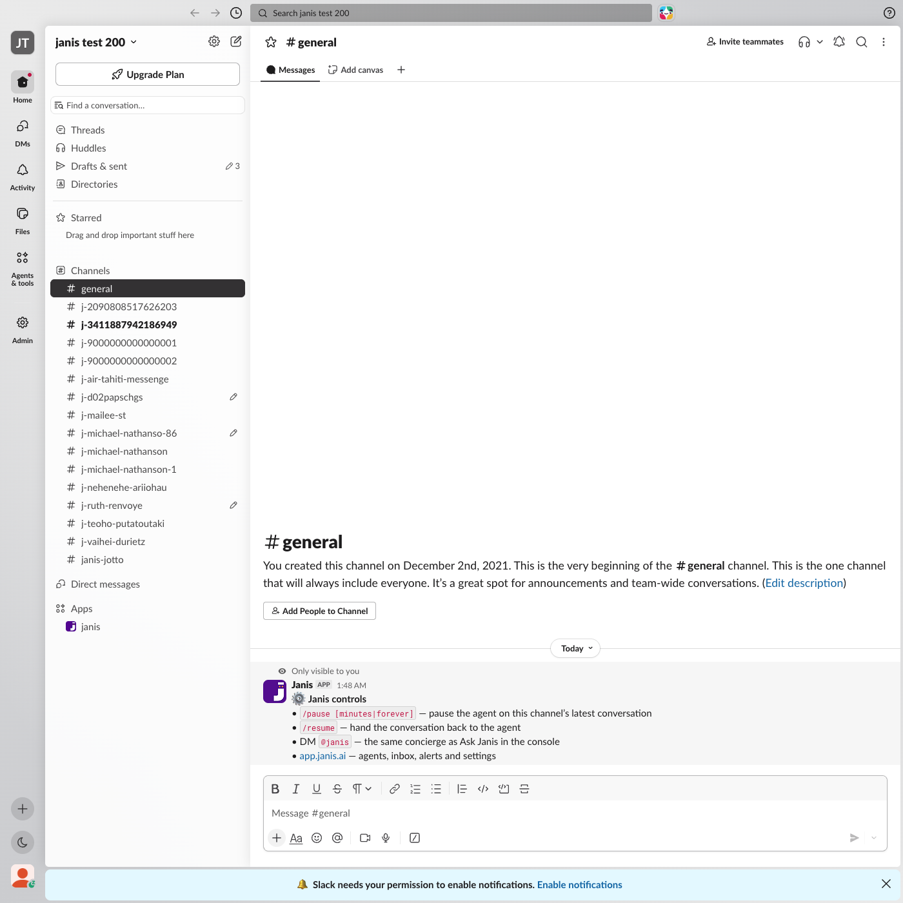

Janis for Slack — installation, setup and functionality
Recorded against the production app installing into a fresh Slack workspace (janis test 200).

2. Workspace selected in the OAuth picker, ready to allow
3. Post-install landing — signed-in Janis console

4. Welcome DM — the app messages the installer on connect

5. Concierge DM — DMing the app answers via the AI concierge

6. /janis command — ephemeral controls card in a channel
